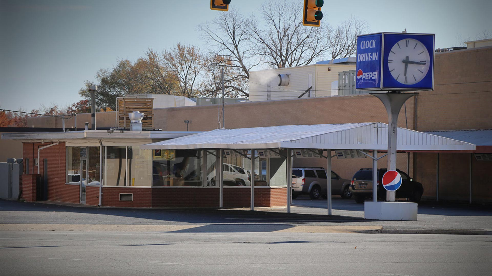
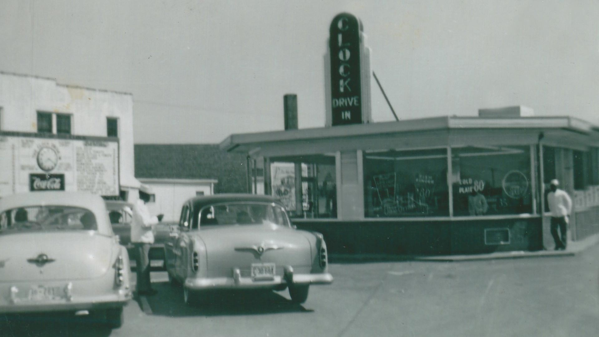
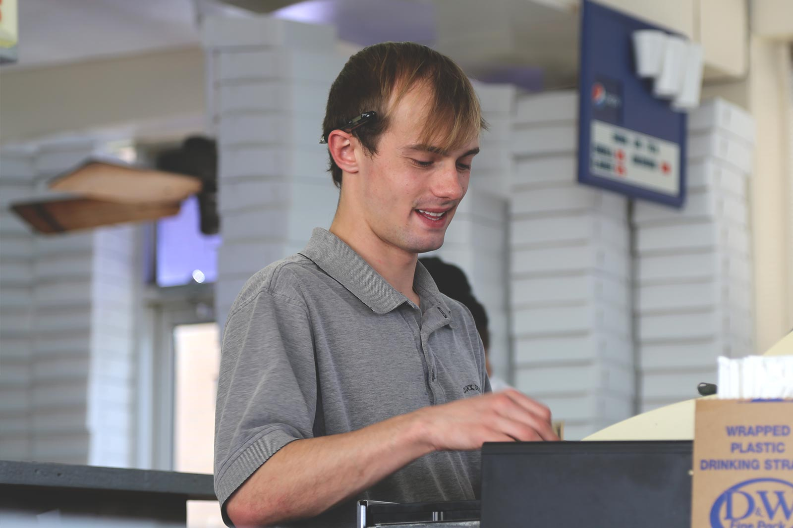

But if you ask Greenville residents about the Clock Drive-In, they would say it’s been sitting at that Wade Hampton intersection serving cold tea and amazing burgers for, well, forever.If you are new to Greenville or have yet to step inside these charming hole-in-the-wall diners called “Clock,” you have probably wondered: what’s the story there?

- 
There’s more to a clock than it seems.
Learn Our StoryThe 1950s weren’t all that long ago in the grand scheme of things.
Our Story
From 1950s teenage flirtations to its well known “almost” closing, here is the story of the Clock Drive-in on Wade Hampton.But let’s not start at the beginning.
In 1985, when the Clock was owned by Paul Banias and Harry Manteckas, Mrs. Banias was invited to Downtown Greenville’s Café and Then Some for a play on a Saturday night. “You’re going to love this,” said her friend and director of the skit, Susan Smith, who then retreated backstage to prepare. The lights went out over the crowd, including Billie Banias in her front row seat, and then the curtain opened. A spotlight fell on a rowboat filled with young men and women and in the bow, a cox crying, “Row! Row! Row!” Mrs. Banias could guess where this comedic script was going: she was the daughter of Greek immigrants who had settled in Kentucky in the 1950s. Her parents had operated a successful restaurant while Billie attended school, mastered English and American culture.

“Now listen to me!” boomed the cox, “You are going to America. You will make hamburgers. And hotdogs. And serve iced tea. And it will make you rich! Now row!”
The actors playing those early 20th century Greek immigrants rowed with fervor, and Mrs. Banias laughed and nodded. While the restaurant business had not made her family rich–the menu prices were practically underground they were so low–America had indeed been rich in opportunity in comparison to the war-wasted Greece of her predecessors’ day. Much of this opportunity turned out to be in the food services industry, a trade much appreciated by the Greeks, easily learned, and quickly profitable. Greeks who dared venture away from the beauty and familiarity of their country were often the highly motivated type, working long hours, apprenticing under parents, uncles, or cousins, and owning/operating their own businesses within a matter of months. The founders of the Clock restaurant were no exception.

The First Clock
The first restaurant bearing The Clock name appeared in Greenville in 1950, on Buncombe Street across from the Kash and Karry.
The Buncombe St. location was owned by two young men. They opened a second restaurant, The Clock #2 on Stone Avenue, soon after. Nick Hambaris worked the cash register, cleaned, cooked, made orders–and made plans. After learning the business from his managers, Nick, along with his brother John, purchased both Clock restaurants and planned a third. A shiny new building was constructed in the Wade Hampton area of town. The newest Clock, the Clock Drive-In #3, opened its doors in 1954. It was the third of over five businesses that would go on to open and benefit from the reputation for the good food, great prices, and fast curb-hop that came with the name. The brothers Hamberis hired friend Alex Koutsoukis to manage the third Clock. After getting a good handle on the business, Alex and his brother John (not to be confused with the other John!) took over ownership of the Clock a few years later. Nick’s son Paul Hambaris describes the expansion of the Clock name this way: “No strings attached: no franchises, no fees...just hard work.” That’s right. There were no brand rights claimed by original Clock founders; there were no menu specifications. There was an attitude of thankfulness that inspired a supportive attitude between Greeks working hard to make a life in America.
1950s Greenville was a conservative city built on the textile industry, steeped in Southern tradition. But the motor vehicle was exploding in popularity, and with four wheels came freedom.
New opportunities for teens to socialize later and with less supervision was met with excitement by some and shunned by others. The Clock, which was a popular family spot, began to fill with the cars of oh-so-cool teens after school. In fact, each high school in Greenville had its own “joint,” a popular place to socialize over hot food and cold drinks. If you were a student in Greenville and wanted to contact someone outside of school hours, you’d have to ring their home phone and speak to their parents. Or you could go to your school’s joint. Located adjacent to a Winn grocery store (before Winn-Lovett and Dixie Home Stores partnered in 1955 to become Winn-Dixie), a pharmacy, and a Shoney’s, The Clock #3’s location turned out to be a product of great business foresight. Wade Hampton Blvd soon became a main thoroughfare, allowing Upstate residents to travel between Greenville, Spartanburg, and Charlotte. The Winn-Dixie Supermarket provided meat and produce for the restaurant, and the Clock’s parking lot, about three times the size it is now, could fill up with the cars of eager customers. In the ‘60s, Wade Hampton High School opened just a mile down the road. The Clock Drive-In quickly became WHHS’s joint. You could pull into the Clock’s lot on a Friday night and have to wade through 2,000 students to get up to the bustling counter. A police officer would be assigned to just The Clock, to try to alleviate some of the loitering and the tough guy shows that often came with it.
A Changing Landscape
Meanwhile, some of the resistance to this new social structure was showing itself in Greenville.
Bob Jones University had procured the Winn-Dixie Building and finished a wall between its campus and all that was beyond it, particularly The Clock, which allowed inter-gender socializing that wasn’t in BJU’s vision for its students. Even though the “looser” conduct between students was indeed a big change for the times, guys and gals were still largely self-separated. Girls stayed in their vehicles and ordered from the friendly curb hops, while the guys either stayed in their cars or went inside to order. Writer Randy Sue Coburn remembers in an article for the Washington Star, “[W]hile at the Clock, every Wade Hampton female, no matter how rebellious, was confined to sitting in a car. By an unwritten but uniformly observed rule, the indoor restaurant area was strictly male territory.” Not that the guys and gals didn’t ever mingle: the Clock was a great spot for a date. In 1972, the Koutsioukis Brothers handed ownership of the Clock to Paul Banias. He did not raise prices and made only minor changes to the menu. As the textile industry fizzled out, Greenville’s pace slowed. But Clock customers remained as constant as the onion ring recipe, though now they showed up in small Japanese cars instead of flashy American to sit under the shaded overhang.
At last, we return to Billie, who was a young woman in the early 70s. Her parents had immigrated to the United States a few decades earlier.
There they lived and worked in Kentucky, where their daughters completed high school and then college at UK. After attending for two years, Billie entered the Marines. After she finished serving, Billie traveled to Greece with her family. Paul Banias lived in the small village of Stenoma, Greece, with his parents. Their next door neighbors happened to be family members of Billie’s. On her visit to Greece, Billie met the boy next door, Paul, and married him. The new couple moved to Kentucky in the 60s. By the mid-sixties, they called Greenville home. Paul co-owned Pete’s on Pendleton St., and then took ownership of the Clock in 1972. Paul was known for his thick, Greek accent (in contrast to his wife’s perfect American English) and his tendency to run off high school-aged kids who were using the Clock as a hangout spot. Many lifelong customers remember his command to “Get outta here!” with fondness. Paul and Billie had a son and a daughter, both of whom went to school close by so that they could walk to the restaurant in the afternoons. According to John Banias, Paul had the kids working as soon as they could walk. “Okay, okay,” he concedes, “Since third grade.” While Paul’s steely work ethic naturally trickled down to his children, he wanted them to put school first in their lives. “He wanted us to have the opportunities he didn’t have, and he knew college would open up a lot of doors.” Even though entering the Clock’s doors meant having to do homework or restaurant work for John, he didn’t mind. The Clock was the place to hang out for Wade Hampton teenagers. John remembers begging to work Friday nights–prime cool teenager time–and boycotting the signature white paper hat while doing it. “It was awesome. Here I was, ten years old, and all the high schoolers knew me.”
New Ownership
As the Banias children grew, so did after school opportunities for those cool high schoolers: cable television, the Haywood Mall, movie theaters, different restaurants.
The Clock’s customer base was thinning out as John left Greenville to attend the College of Charleston. There was never much talk about taking over the Clock at that time, because sending John through college had been Paul’s priority all along. John graduated and worked “in an awful desk job” for seven years. But then Paul decided to retire. “I didn’t want to pass up the opportunity to run an established business,” John said, reminiscing about all the history he and the old, glass-walled diner have. And so, John took over the rent and the management of the Clock Drive-In as it entered the 21st century. By this time, curb hop service had ceased, and the Clock Drive-in had served customers for nearly 60 years and only raised its prices a handful of times, if that. Even though the large spinning clock out front had slowed to a stop and was only correct about the time twice every 24 hours, old and new hungry customers frequented the shaded parking spots and red booths.
In 2013, The Clock announced the distressing news of its impending closing.
Word got out around town, including on a few local foodie blogs. Then, cars started rolling in. And then more. Suddenly, the parking lot was filled with hundreds of customers eager to get their last-ever taste of that BBQ, chili, and onions rings. Time had turned back at the Clock, and it was revisiting its glory days one last time. The sheer amount of support and expression of regret over this stalwart local business’s closing changed the Clock’s destiny. A lease was renegotiated, and John remained at the helm of a business that was proven as special to its customers as it was to him. Today, owner John Banias sees the Clock continuing in its tradition of fast, friendly service and quality, classic meals. No one knows what the future will bring, but Greenville residents can testify to the power of a long, good history.

What they say
Learn why our customers can't get enough!
-

“Best onion rings in town!!”
- Stephanie Sullivan
-

“I've been a Clock regular since starting my freshman year at BJU back in 1970.”
- Farley Barnhardt
-
“My first trip to this Clock was just a few days after they opened, and I am still a regular customer after 61 1/2 years.”
- Tom Brissey
-

“Clock chilidog plate (mustard, chili, onions, slaw) with a cheeseburger on the side and fries all da way!!”
- Jason Harris
-

“Dear John, the chili cheeseburger hit the spot tonight!”
- Libby Flack Everhart
Find Us!
We're located on Wade Hampton Blvd, right next to Bob Jones University.The Clock1844 Wade Hampton Blvd.Greenville, SC29609